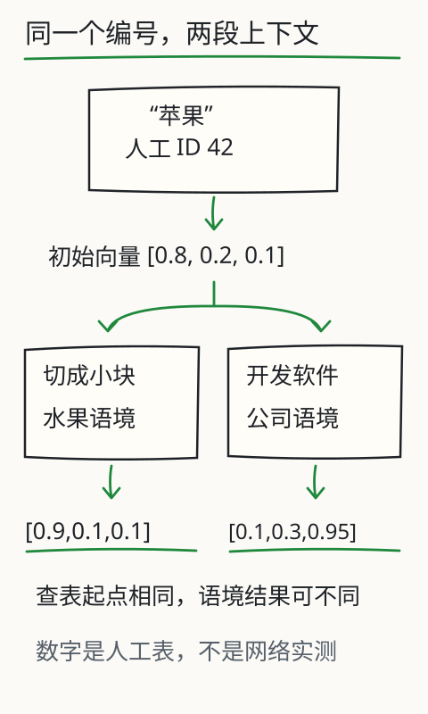

一串数字怎么表示语言？
“他把苹果切成小块。”读到这里，你大概不会想到软件。换成“她在苹果公司开发软件”，同样两个字，意思就转了弯。

模型接到的却都是数字。它该给“苹果”换个编号，还是保留编号、改变后面的表示？带着这个问题，沿图看一次，再切换下面的两句话。
编号用来查表，向量参与计算
先到书架取一本书，再读书里的内容，这两个动作不同。token ID 像书架编号，告诉程序到哪一行取数据；取出的那一行数字叫嵌入向量，会参与后面的计算。42 号挨着 43 号，只说明存放位置挨着，不能说明意思相近。
为了看清这个区别，下面暂把“苹果”当作一个 token，编号设为 42。编号和向量都是教学用的人工数据，实际 tokenizer 可能把这两个字切成多个 token。

同一个“苹果”，两种语境
- 示意 token ID
- 42
- 初始查表向量
- 上下文后示意表示
● 当前语境；① 水果；② 设备；③ 与①同平面；④ 零向量。坐标仅取前两维，重合点用双圈显示。
展开全部三维数字
向量和语境后表示均为人工示意，不是运行 Transformer 的输出；图只显示前三维中的前两维，相似度使用全部三维。
同一行起点，不同的上下文结果
切换句子后，两行数字没有一起变。初始向量仍是同一行，因为查表用的还是 ID 42；上下文后的表示换了，因为“切成小块”和“公司开发软件”提供了不同线索。你读词时会结合前后文，网络也会让当前位置的表示受到可见上下文影响。
真实网络需要逐层计算，还要利用位置信息，才能得到后面的表示。这里直接摆出两份示意结果，先认清“起点相同、处理结果可以不同”。这些数字没有经过网络计算，也不代表 DeepSeek 或 Kimi 内部的“苹果”。
平面上重合，完整向量也可能不同
再做一个容易看错的小判断：图上两个点重合，是否说明它们是同一个向量？选水果语境，展开原始数字。你会发现“水果示意”和“同平面异第三维”的前两维一样，第三维却不同。只画前两维，就把这点区别藏起来了；用全部三维计算，余弦相似度也会不同。

可以把这看成投影的代价：纸面只能画出有限的维度，真正的嵌入通常有更多维，没画出来的部分仍然参与计算。所以图上距离近只能提供线索。图里的轴也只是数字维度，没有哪一根被保证是“甜度”或“公司程度”。
搜“怎么退货”，为什么能找到“退款”？
这串数字能用来做什么？例如你问“怎么退货”，文档却写着“申请退款与退回商品”。语义搜索可以把问题和文档片段变成可比较的向量，按相似程度找到候选，不必只盯着字面是否相同。
但搜索若找来一篇旧版退货政策，文字再相似也得核对日期、适用产品和条款。相似度帮你缩小查找范围，不能替你决定哪条规定仍然有效。实际接入时还要分清聊天服务和嵌入服务：能聊天，不等于提供读取内部向量的接口。
既然是数字，为什么还能表示不同意思？
会不会有人事先把“甜度、颜色、公司程度”填进向量？通常没有这张人工属性清单。训练时，输入向量、网络各层和输出参数一起受到损失约束；这些数字的组合若更有助于任务，更新就可能保留下来。我们可以事后分析表示，但不能提前宣布“第 3 维就是水果程度”。


拿“苹果”再核对一次。ID 42 查到的起点一直是 [0.8,0.2,0.1]；在“切成小块”和“公司开发软件”两种上下文里，示意结果分别写作 [0.9,0.1,0.1]、[0.1,0.3,0.95]。这张人工表把起点和结果并排摆出，帮助你认清变化发生在哪里；它没有运行网络来计算这两个结果。
再用两支同方向、不同长度的箭头理解余弦：cos(a,b) = (a·b)/(‖a‖‖b‖)。[1,0] 与 [2,0] 都向右，余弦为 1，可一支长、一支短，并不是同一数组。零向量连方向都没有，余弦也就未定义。再加上二维图没画出的维度，“看着近”“方向近”“数组相同”就更不能混为一谈。
试着把这个区别用在搜索里：“去年如何申请”和“今年怎么申请”可能很相似，偏偏年份决定了哪份规定能用。相似度先筛候选，日期、权限和原句还得核验。以后换嵌入模型或向量维数时，也要处理旧索引的兼容与重建；换了表示空间，旧分数和新分数不能直接混用。
再深一层
余弦相似度是 a·b / (‖a‖ × ‖b‖)，比较两个向量的方向。这里对全部三维求点积和长度。零向量没有方向，页面明确显示“未定义”，不会把它算作零相似。
式子中的 a·b，是把对应位置的数相乘，再把乘积加起来；‖a‖、‖b‖分别是两支向量的长度。分母把长度的影响除掉，所以两支箭头即使一长一短，只要方向相同，余弦仍可以等于 1。
即使数值接近 1，也不是“事实正确率接近 100%”。这个分数的用途和训练方式、数据及具体任务有关。